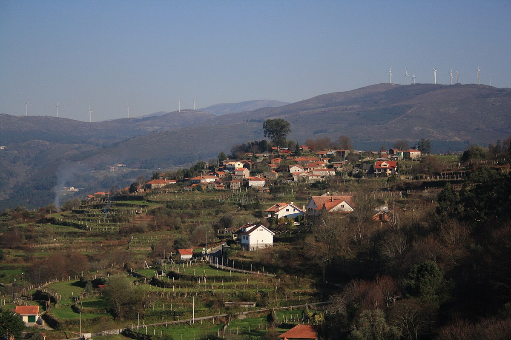
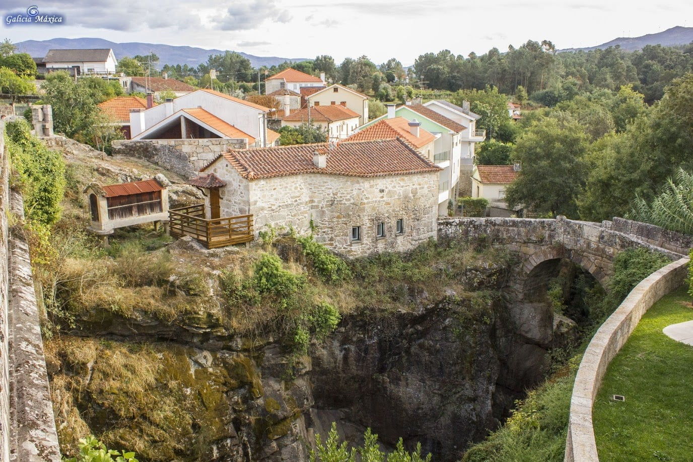

Inicio
Bem-vindo ao site da Vila de Monção! Localizada na região norte de Portugal, Monção é uma vila rica em história e tradição. Com sua arquitetura medieval bem preservada e uma paisagem deslumbrante de montanhas e rios, Monção é um lugar encantador para visitar e viver.Este site tem como objetivo fornecer informações úteis sobre a vila, desde sua história e cultura, pontos turisticos e gastronomia local. Navegue pelo nosso site e descubra tudo o que Monção tem a oferecer. Seja para uma viagem de lazer ou para uma mudança para a vila, esperamos que encontre aqui as informações necessárias para tornar sua experiência em Monção inesquecível.
Sobre Monção
Monção é uma cidade portuguesa localizada na sub-região do Alto Minho. Faz parte da região Norte e do distrito de Viana do Castelo. É a sede do Município de Monção e tem uma área urbana de aproximadamente 8,68 km2, num total de 211,31 km2, subdividida em 24 freguesias, com uma população de aproximadamente 17.818 habitantes (em 2021) e uma densidade populacional de 84 habitantes por km2. Monção é delimitada a norte pela região espanhola da Galiza, a leste pelo município de Melgaço, a sul por Arcos de Valdevez, a sudoeste por Paredes de Coura e a oeste por Valença.
Historia
Monção teve carta de foral de D. Afonso III datada no 12 de Março de 1261. Tornou-se célebre no discurso das guerras fernandinas, devido à enérgica Acão de Deu-la-deu Martins, quem era esposa do alcaide local, que conseguiu ao cerco que os castelhanos lhe impuseram, atirando-lhes com seus viverem. É por isso que ainda aparece nesta época, nas armas desta vila, uma mulher a meio corpo em cima de uma torre, brandindo com um pão em cada mão, enquanto que à sua volta surge, numa bordadura, a divisa da vila, corruptela do nome da heroína ( Deus o deu, Deus o há dado).Monção entre 1915 até 1989 existiu uma linha de comboios mas pela infelicidade de todos os habitantes de Monção a linha foi desativada.

Pontos Turisticos
Muralhas de Monção
Quando o plano é visitar Monção, é evidente que a jóia da coroa é a emblemática Fortaleza de Monção. As muralhas de Monção são outra "estrela" que brilha no firmamento das fortalezas portuguesas nas margens do rio Minho, onde faz fronteira com Espanha (de Melgaço a Caminha, na foz, passando por Valença e Cerveira). E não há melhor forma de os conhecer do que percorrendo os Caminhos de Monção, que percorrem o lado norte das muralhas e as margens do rio Minho até ao admirável Parque das Caldas, sempre de olho na vizinha Galiza, que acena sedutoramente do outro lado.
Torre de Lapela
Temos também a Torre da Lapela, considerada no século XIX como a Torre de Belém do Minho. Empoleirada num afloramento granítico nas margens do Minho, a "sentinela do Minho" oferece do alto dos seus 35 metros fabulosas vistas panorâmicas sobre o rio, a costa galega e as casas da Lapela.

Palácio da Brejoeira
Uma paragem no grandioso Palácio da Brejoeira reúne o melhor de dois mundos (ou três). Situado na freguesia de Pinheiros, a apenas 5 km do centro de Monção, uma visita ao interior é a soma de momentos deslumbrantes entre o nobre palácio neoclássico do século XIX, a capela, o teatro, os jardins e a antiga adega onde se produz o excelente Alvarinho e a genuína aguardente.

Santo António
No ponto mais alto do concelho de Monção (1114 metros), na freguesia de Riba de Mouro, encontra-se a Branda de Santo António de Vale de Poldros. É uma das mais autênticas brandas que conhecemos na região, preservando inúmeras cardenhas, as construções rudimentares de granito e xisto utilizadas como abrigo pelos pastores que, no Verão, levavam o seu gado para as pastagens da montanha.

Gastronomia
Monção, como todo o Minho, é uma terra de boa comida, de cozinha tradicional que valoriza os produtos do campo, dos rios e das montanhas.
Caldo Verde
Uma das principais atrações da gastronomia minhota é o caldo verde, é considerado uma das Sete Maravilhas da Gastronomia Portuguesa. Feito com couve desfiada, batata, alho, cebola e azeite, o caldo verde pode ser servido em qualquer refeição e pode ser acompanhado por fatias de bom chouriço, salpicão e pão de milho tradicional.

Lampreia
A lampreia é um peixe ciclostomo de água doce semelhante à enguia. Cozida de várias maneiras, a lampreia é tradicionalmente cozinhada com arroz (o popular arroz com lampreia), ela é seca e depois grelhada ou depois de limpa pode ser grelhada nas brasas, que se chama lampreia verde nas brasas. Em Monção e em todo o Vale do Minho, a lampreia é um prato de excelência durante os meses de Fevereiro e Março.
Cordeiro á Moda de Monção
Cordeiro à Moda de Monção, um prato típico da região, é também o prato mais popular em Monção. Localmente é chamado "foda à Monção" e será mesmo um prato certificado, como deve ser preparado de acordo com a tradição, "numa panela cozinhada em forno à lenha não só recupera o conhecimento dos nossos antepassados, mas também acrescenta um pouco de arte, afecto e profissionalismo dos cozinheiros de hoje. O nome artístico, por assim dizer, reflecte o carácter afável e bem intencionado do povo de Monção".

Vinho Alvarinho
Naturalmente, os vinhos da casta Alvarinho são a principal referência vinícola desta sub-região, tendo alcançado um prestígio assinalável ao longo dos anos devido à sua qualidade e notoriedade assinaláveis. Sobretudo porque reúne consenso: há alguém que não aprecie um belo (e fresco) copo de Alvarinho?
Freguesias
O município de Monção está dividido em 24 freguesias:
Abedim
Abedim tem uma área de 8,89 km²[1] e aproximadamente 191 habitantes. A sua densidade populacional é de 21,5 habitantes/km². Encontra-se a 22 km da capital do concelho. Nas colinas que rodeiam a cidade encontram-se os restos de uma antiga torre, cuja construção é presidida por várias lendas. O castelo da Pena da Rainha foi classificado como um local de interesse público em Outubro de 2020.
Anhões e Luzio
Anhões e Luzio tem uma área de 14,38 km² e aproximadamente 260 habitantes. Foi criada durante a reorganização administrativa de 2012/2013, resultante da agregação das antigas paróquias de Anhões e Luzio.
Barbeita
Barbeita encontra-se numa área de 7,53 km² e aproximadamente 923 habitantes. A sua densidade populacional é de 122,6 habitantes/km².
Barroças e Taias
Barroças e Taias tem uma área de 2,46 km² e aproximadamente 279 habitantes. A sua densidade populacional é de 113,4 habitantes/km². Quando o vigário Sebastião Sanches de Araújo respondeu à Consulta de 1758, as freguesias de São Miguel de Barroças e Santo André de Taias já se encontravam unidas.

Bela
Bela tem uma área de 4,22 km² e aproximadamente 698 habitantes. A sua densidade populacional é de 165,4 h/km².
Cambeses
Cambeses tem uma superfície de 4,17 km² e aproximadamente 496 habitantes. A sua densidade populacional é de 118,9 h/km².

Ceivães e Badim
Ceivães e Badim encontra-se numa área de 8,95 km² e aproximadamente 670 habitantes. Foi criada durante a reorganização administrativa de 2012/2013, resultante da agregação das antigas freguesias de Ceivães e Badim.

Lara
Lara tem uma área de 5,33 km² e aproximadamente 255 habitantes. A sua densidade populacional é de 47,8 habitantes/km².
Longos Vales
Longos Vales tem uma área de 12,04 km² e aproximadamente 989 habitantes. A sua densidade populacional é de 82,1 h/km².

Mazedo e Cortes
Mazedo e Cortes tem uma área de 12,13 km² e aproximadamente 3 377 habitantes. Foi criada durante a reorganização administrativa de 2012/2013, resultante da agregação das antigas freguesias de Mazedo e Cortes.

Merufe
Merufe tem uma área de 28,49 km² e aproximadamente 864 habitantes. A sua densidade populacional é de 30,3 habitantes/km².
Messegães, Valadares e Sá
Messegães, Valadares e Sá encontra-se numa área de 8,25 km² e aproximadamente 658 habitantes. Foi criada durante a reorganização administrativa de 2012/2013, resultante da agregação das antigas freguesias de Messegães, Valadares e Sá.

Troviscoso
Troviscoso tem uma área de 8,68 km² e aproximadamente 3 535 habitantes. Foi criada durante a reorganização administrativa de 2012/2013, resultante da agregação das antigas freguesias de Monção e Troviscoso.
Moreira
Moreira tem uma área de 3,51 km² e aproximadamente 615 habitantes. A sua densidade populacional é de 175,2 h/km². Tem várias actividades culturais e desportivas, tais como uma associação, CDRCM, que organiza eventos culturais e desportivos, um grupo de dança popular (Rancho Folclórico Santa Maria de Moreira), uma associação que trabalha com linho artesanal, um grupo coral (Santa Luzia) e também um clube de futebol, UDM, com várias classes.
Pias
Pias consegue ter uma área de 10,04 km² e aproximadamente 854 habitantes. A sua densidade populacional é de 85,1 h/km². A população está principalmente envolvida na viticultura, com ênfase no cultivo de Alvarinho. Existem também pequenas empresas de vestuário, madeira, metalurgia e construção que empregam outra parte da população.
Pinheiros
Pinheiros tem uma área de 2,81 km² e aproximadamente 345 habitantes. A sua densidade populacional é de 122,8 h/km². Pinheiros de São Cipriano é uma das mais emblemáticas paróquias de Monção, e mesmo do Alto Minho. A sua localização geográfica, a sua agricultura e as suas tradições contribuem para isso,
Podame
Podame encontra-se numa área de 3,66 km² e aproximadamente 278 habitantes. A sua densidade populacional é de 76 h/km². A igreja paroquial é muito antiga. Pertenceu a D. Adozinda Aires, irmã de D. Telo Aires, e já é mencionada em documentos de 1033. Não deve, no entanto, ser a igreja original. Não é, certamente, na sua totalidade. De facto, a capela sul foi encomendada entre 1772 e 1779 pelo Padre João Manuel Pereira de Castro, natural da Portela. A igreja é construída em pedra bem trabalhada, com arcos, cornijas, pirâmides, cruzes e o suporte do púlpito.
Portela
Portela tem uma área de 9,15 km² e aproximadamente 242 habitantes. A sua densidade populacional é de 26,4 h/km².
Riba de Mouro
Riba de Mouro tem uma área de 13,94 km² e aproximadamente 964 habitantes. A sua densidade populacional é de 69,2 h/km². A freguesia de Riba de Mouro, situada nas encostas da Serra da Peneda, fica a cerca de vinte quilómetros da sede do concelho. Faz fronteira com Badim, Podame e Tangil (chega até à cunha da capela de Santo António), Sistelo (Arcos de Valdevez) e Gave, Cousso e Parada do Monte (as três em Melgaço). Com uma área de 1 394 hectares, inclui os seguintes lugares: Aldeia, Bouçó, Carvalho, Cavenca, Cordeiros, Corga, Costa, Cotaros, Cruz Nova, Cruzeiro, Freixo, Fundegos, Gateira, Lijo, Linhares, Pereiro, Portela, Quartas, Ribeiro, Rua, S. Miguel e Vale de Poldros.

Sago, Lordelo e Parada
Sago, Lordelo e Parada tem uma área de 8,33 km² e aproximadamente 448 habitantes. Foi criada durante a reorganização administrativa de 2012/2013, resultante da agregação das antigas paróquias de Sago, Lordelo e Parada.

Segude
Segude consegue ter uma área de 2,56 km² e aproximadamente 320 habitantes. A sua densidade populacional é de 125 habitantes/km². Pertenceu ao antigo condado de Valadares até 1855.
Tangil
Tangil encontra-se numa área de 21,34 km² e aproximadamente 629 habitantes. A sua densidade populacional é de 29,5 habitantes/km². Pertenceu ao antigo condado de Valadares até 1855.
Troporiz e Lapela
Troporiz e Lapela tem uma área de 3,96 km² e aproximadamente 454 habitantes. A sua densidade populacional é de 114,6 habitantes/km². Foi criada durante a reorganização administrativa de 2012/2013, resultante da agregação das antigas freguesias de Troporiz e Lapela.

Trute
Trute tem uma área de 4,71 km² e aproximadamente 277 habitantes. A sua densidade populacional é de 58,8 h/km². Na lista de igrejas localizadas no território de Entre Lima e Minho, elaborada a partir das Averiguaciones de D. Afonso III, em 1258, é mencionada como uma das igrejas pertencentes ao bispado de Tui. Em 1320, no catálogo das mesmas igrejas, encomendado pelo rei D. Dinis, para o pagamento do imposto, Santa Eulália de Trute foi avaliada em 80 libras. Fez parte da arquidiocese de Cerveira.
Patrimonio
Palacio da Brejoeira
Antigamente, era o centro de vastas propriedades, atualmente fundidas numa mesma extensa área onde se produz o famoso vinho Alvarinho, assim como, uma genuína aguardente bagaceira. Desde 1977, que se afirma como referência na produção desta casta de vinho, merecendo uma visita com direito a prova de vinhos. Atravesse os seus portões e, já no interior, atente na decoração neoclássica das salas, assim como, na capela e no teatro. No exterior - que, em último caso, podemos apreciar através do portão - existe um magnificente terraço ajardinado, ladeado por muros. Para além da ligação à casta Alvarinho - que não deve deixar de experimentar! - esta faustosa moradia fidalga ficou conhecida por, aqui, ter decorrido, em 1950, uma reunião entre António de Oliveira Salazar e o General Franco. Uma casa, portanto, revestida de grande valor histórico, a coadjuvar a sumptuosidade.
Casa do Curro
Belo exemplar de casa solarenga urbana, cuja construção remonta ao século XVII. O nome de Casa do Curro está relacionado com o Terreiro do Curro, atual Praça Deu-la-Deu Martins. Com entrada pelas duas principais praças de Monção, Praça Deu-la-Deu Martins e Praça da República, o edifício dispõe, ainda, de um espaço exterior convidativo ao descanso. O imóvel começou por ser utilizado como espaço de apoio à atividade cavalar, tendo, nas décadas seguintes, conhecido diversos fins. Em 1984, foi objeto de uma profunda recuperação, recebendo a Biblioteca Municipal e a Delegação de Turismo. Em 2003, com a inauguração da nova Biblioteca Municipal, na antiga escola primária da vila, aquele espaço passou a centrar-se na divulgação e promoção do vinho Alvarinho. Presentemente, recebe a Loja Interativa de Turismo e o Museu do Alvarinho.

Praça Deu-la-Deu
A Praça Deu-la-Deu, sala de visitas da nossa vila, deve o seu nome à heroína local que, no século XIV, salvou a localidade da invasão castelhana, fruto de uma atitude de grande firmeza e astúcia. A sua coragem está perpetuada em brasão e monumento. Ladeada por árvores e com o pavimento em calçada à portuguesa, na sequência de uma intervenção efetuada na primeira metade do século XX, a Praça Deu-la-Deu representa, desde sempre, um palco privilegiado de atividade social e cultural da vila. Recebendo, com frequência, espetáculos musicais e manifestações culturais, a Praça Deu-la-Deu e o Largo do Loreto tem vários motivos merecedores de uma visita demorada: o Museu do Alvarinho, a Igreja da Misericórdia, a estátua da Danaide/Brasão de Deu-la-Deu, o monumento a Deu-la-Deu e o miradouro sobre o rio Minho.

Praça Da Republica
A Praça da República, conhecida localmente como “Terra Nova” ou “Praça de Cima”, sofreu, recentemente, trabalhos de requalificação urbanística no interior e artérias circundantes, transformando aquela área numa nova centralidade do centro histórico de Monção. Com o brasão de Monção desenhado no pavimento, em frente ao Palácio da Justiça, a nova imagem da Praça da República apresenta três repuxos de água com símbolos de Monção (Alvarinho, Termas e Coca), áreas verdes, pérgula, bancos, papeleiras, iluminação pública reforçada e passeios mais largos. Com uma das artérias vedada ao trânsito automóvel, evidencia-se um acesso pedonal direto entre as traseiras do Museu do Alvarinho e o Cine Teatro João Verde e Biblioteca Municipal, interligando aqueles três equipamentos localizados no núcleo urbano. De semblante mais moderno e atrativo, a Praça da República potenciou a atividade comercial e turística naquela zona, assumindo-se como um espaço preferencial para a passagem de momentos agradáveis com a família ou grupos de amigos.

Estátua da Danaide/Brasão Deu-la-Deu Martins
A estátua da danaide foi construída pela Câmara Municipal em 1837, trata-se de um chafariz de tanque circular, com uma base em forma de prisma que suporta a estátua da figura mitológica grega Danaide, trajando uma túnica e com uma peneira. De 1869 data a colocação do brasão de Monção com a figura de Deu-la-Deu Martins, heroína da terra, colocada no centro da base.

Ponte da Barbeita
Ponte da Barbeita, também conhecida como Ponte sobre o Rio Mouro e Ponte medieval que atravessa o rio de Mouro, é uma ponte medieval localizada na aldeia de Ponte de Mouro, ligando as freguesias de Barbeita e Ceivães, sobre o rio Mouro, no concelho de Monção, Portugal.
A ponte sobre o rio Mouro é uma das mais impressionantes estruturas medievais de travessia, erguendo-se no alto de um imponente maciço rochoso. A sua importância, no contexto das pontes históricas nacionais, não se deve à sua dimensão - consiste num único arco - nem ao facto de constituir um marco estilístico ou evolutivo na construção deste tipo de estrutura. Pelo contrário, impressiona, ainda hoje, devido ao seu impacto cenográfico, mas também porque é uma obra de engenharia notável, factos que, combinados, lhe conferem um lugar importante na história da actividade pontifícia medieval no noroeste do país.
Termas de Monção
As Termas de Monção estão situadas em Monção, Portugal. As águas das Termas de Monção são hipertermais (nascentes a 49,5º), hipersalinas, sulfúricas, sódicas, lituadas, fluoradas, com um pH de 7,4. A temperatura da água das Termas de Monção varia entre 30º e 49º.
As nascentes térmicas são particularmente recomendadas para o tratamento de doenças cutâneas, músculo-esqueléticas e respiratórias crónicas. Para além da cura térmica tradicional, são também oferecidos programas específicos de bem-estar térmico, relaxamento, manutenção, reeducação alimentar, perda de peso e anti-stress.
Torre de Lapela
O Cine-Teatro foi inaugurado a 11 de Junho de 1949. Foi encerrado pelos proprietários a 31 de Dezembro de 1986, depois de ter sido abandonado. Foi adquirido pela Câmara Municipal de Monção por 350.000 euros em 1998. Após obras de remodelação que custaram mais de 2,5 milhões de euros, foi inaugurado como Teatro Municipal a 25 de Abril de 2013. O Cine-Teatro João Verde mantém o seu desenho original e senta 300 pessoas. Para além de filmes comerciais, concertos e espectáculos de teatro, o município planeia realizar seminários, colóquios, reuniões e exposições.

Ponte da Rebouça
Situada na freguesia de Troporiz, trata-se de uma obra de arte de origem romana, possuindo ainda silhares almofadados no arco de suporte. A ponte está referenciada em documentação sobre as principais vias de circulação da época romana e medieval, sendo uma das diversas travessias do rio Gadanha.

Evolução da População


Eventos
FolkMonção
Organizado pelo Rancho Folclórico da Casa do Povo de Barbeita, o "FolkMonção - O Mundo a Dançar", Festival Internacional de Dança Folclórica, realiza-se geralmente nos primeiros dias de Agosto, com a participação de vários grupos e espectáculos estrangeiros, principalmente nos municípios do Alto Minho e da Galiza. Em Monção, as actuações têm lugar no Parque das Caldas e em Ponte de Mouro, Barbeita. Considerado um dos melhores do país, este festival reúne cerca de 80 mil pessoas nos vários espectáculos, incluindo cerca de 450 membros dos grupos presentes e 120 voluntários (cozinha, limpeza, logística, guias, intérpretes). Para além dos espectáculos de dança e música, este evento inclui uma cerimónia de boas-vindas, desfiles e workshops de dança promovidos pelos grupos presentes, e "Noites de gastronomia popular e mundial". O objectivo é proporcionar bons momentos para a população e promover o encontro de culturas entre os participantes.
Feira da Foda
Realizada na freguesia de Pias, a "Feira da Foda" é um evento gastronómico dedicado ao "Cordeiro à Moda de Monção", popularmente conhecido como "Foda a Monção", que assume a promoção dos recursos endógenos e diferenciadores da região como uma das estratégias do executivo Monçanense. O seu objectivo é manter a qualidade e garantir a autenticidade deste prato histórico e tradicional do concelho de Monção. Organizado pela Confraria da Foda e pela Junta de Freguesia de Pias, com o apoio da Câmara Municipal de Monção e o patrocínio de várias empresas da região, o programa inclui provas do "Cordeiro à Moda de Monção", expositores com vinhos locais e artesanato regional, bem como espaços para agricultores e máquinas agrícolas. Realizada na freguesia de Pias, a "Feira da Foda" é um evento gastronómico dedicado ao "Cordeiro à Moda de Monção", popularmente conhecido como "Foda a Monção", que assume a promoção dos recursos endógenos e diferenciadores da região como uma das estratégias do executivo Monçanense. O seu objectivo é manter a qualidade e garantir a autenticidade deste prato histórico e tradicional do concelho de Monção.

Feira do Vinho Alvarinho
A Feira do Alvarinho de Monção, realizada habitualmente no primeiro fim de semana do mês de julho, é um evento dedicado à promoção e comercialização do vinho Alvarinho. Ao longo de três dias, o Parque das Caldas, cenário incrível que acolhe o evento e o identifica e distingue dos demais, é visitado por mais de 100 mil pessoas, oriundas dos quatro cantos do mundo, que rumam a Monção, com o desejo de sentir o ambiente e o espírito deste evento único no país. Este evento reúne cerca de uma centena de expositores, entre os quais, produtores de vinho, tasquinhas, fumeiros, queijaria e doçaria tradicional, expositores de artesanato, instituições sociais, culturais e desportivas e patrocinadores oficiais. De destacar, também, a existência de uma zona de restauração, espaço onde estão presentes alguns dos restaurantes do concelho e se promove o prato típico de Monção, a “Foda à Monção”, um espaço lounge, um espaço infantil, um espaço destinado à Eprami.com, uma sala de provas, uma área para workshops de culinária, um posto médico e um posto de informação. Para acompanhar o Alvarinho e os petiscos tradicionais, a organização programa atividades de animação e convívio. Além de folclore regional, bombos, concertinas, cavaquinhos e charangas, salienta-se a presença de grupos musicais e djs. “A Maior Wine Party de Portugal”, assim como é conhecida, dada a sua singularidade, visa, acima de tudo, defender e valorizar o vinho Alvarinho, reforçando a sua condição de instrumento estratégico na competitividade económica da região, e constituir-se como um espaço de divulgação da atividade empresarial e associativa da região, servindo de “montra” para a dinamização do mundo rural e apresentação, valorização e comercialização de produtos/artigos locais e regionais.

Virgem das Dores
A "Festa em Honra à Virgem das Dores", uma das mais castas e genuínas peregrinações do Alto Minho, tem lugar em Agosto, com a promessa de seis dias de veneração à imagem de Nossa Senhora e vários momentos de animação com uma forte componente tradicional, etnográfica e festiva. Os momentos mais importantes, que reúnem milhares de pessoas nas ruas e varandas do centro histórico, são a Procissão Solene em honra de Nossa Senhora das Dores, no domingo, o dia principal das festividades, e a Procissão Solene em honra do Emigrante, na segunda-feira, o último dia das festividades.
Feira Tradicional Lá de Riba
Organizada pela Associação Social e Cultural Lá de Riba, a “Feira Tradicional Lá de Riba” nasceu no ano de 2015, com o objetivo principal de divulgação dos usos e costumes da Freguesia de Riba de Mouro, povo com muita riqueza gastronómica e uma característica muito própria, o saber receber quem nos visita. Neste certame, realizado sempre no primeiro fim de semana de agosto, os lugares da freguesia confecionam várias iguarias que nos fazem recuar aos tempos de infância. Não podemos deixar de falar do Rei e da Rainha do evento, sendo eles o Butcho, doce típico e original desta freguesia, e o champarrião na batoneira (única no mundo para fazer este néctar). A betoneira foi criada após o desafio lançado, em tom de brincadeira, por um grupo de emigrantes. O champarrião foi introduzido na primeira edição por esse grupo de amigos, que “meteram” o néctar num caneco plástico (usado para fazer sulfato para as videiras). No final da feira, deixaram uma sugestão “para o ano é numa betoneira”. E assim foi!

Feira do Vinho Tinto
Tangil, freguesia de montanha do concelho de Monção, promove, habitualmente, no mês de maio, a “Feira do Vinho Tinto”. Além de expositores dispersos pelo espaço exterior da Casa do Povo de Tangil, o certame apresenta produtos locais, como presunto, chouriça ou broa, e um programa com animação musical e atividades diversas. Organizada pela Junta de Freguesia de Tangil, a feira possui diversos atrativos gastronómicos, com petiscos variados e provas de vinho e broa, e uma vertente etnográfica que tem como referências a música filarmónica, grupos de concertinas e festival de folclore. Com este certame, a organização procura a valorização dos produtos locais, a criação de um fim de semana animado, para os residentes e visitantes, e a valorização de um espaço de montanha com património secular e paisagens naturais admiráveis e relaxantes.

Noticias
Jovem de 18 anos ferido em acidente de mota em Monção
Ao que os Bombeiros de Monção avançaram, a vítima foi transportada para o Hospital de Santa Luzia, em Viana do Castelo. No local estiveram os Bombeiros Voluntários de Monção com uma ambulância e um veículo de desencarceramento e salvamento e a Guarda Nacional Republicana (GNR) com oito operacionais. O alerta foi dado às 21h51.
Desportivo vence Maria da Fonte… mas não "fintou" regresso ao distrital
O Desportivo de Monção confirmou este sábado o regresso à I Divisão Distrital da Associação de Futebol de Viana do Castelo na próxima temporada. Os monçanenses venceram, fora de casa, o SC Maria da Fonte por 2-6 em jogo a contar para a jornada 25 da série A Campeonato de Portugal. Mas não chegou para evitar a descida de escalão. O desafio até começou da melhor forma para o Depor, que se adiantou no marcador por Nicolas, perto do primeiro quarto de hora. No entanto, no início da etapa complementar, o SC Maria da Fonte restabeleceu a igualdade.

Padre de Monção proibido de exercer após confirmar abuso sexual de menor
A diocese de Viana do Castelo anunciou esta segunda-feira ter "proibido" um padre de Monção de exercer o sacerdócio depois de este ter confirmado um caso de abuso sexual de menor. O caso foi comunicado ao Ministério Público (MP).Em comunicado enviado às redações, a diocese de Viana do Castelo explicou que o caso resultou de "uma denúncia", comunicada "às autoridades civis e canónicas competentes". Confrontando com os indícios apresentados, adianta o comunicado, o pároco de várias freguesias de Monção "confirmou os factos de que é acusado e comunicou a sua decisão de se afastar do exercício das suas funções".

Localização